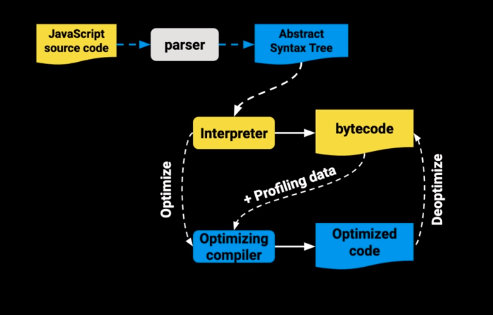
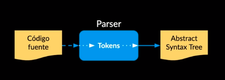

Parsers y Abstract Syntax Tree
El JS Engine recibe el código fuente y lo procesa de la siguiente manera:
El parser descompone y crea tokens que integran el AST.
Se compila a bytecode y se ejecuta.
Lo que se pueda se optimiza a machine code y se reemplaza el código base.
Un SyntaxError es lanzado cuando el motor JavaScript encuentra partes que
no forman parte de la sintaxis del lenguaje y esto lo logra gracias a que se
tiene un AST generado por el parser.
El parser es del 15% al 20% del proceso de ejecución por lo que hay que usar
parser del código justo en el momento que lo necesitamos y no antes de saber
si se va a usar o no.
¿Qué hace un JS Engine?
- Recibe el código fuente
- Parsera el código y produce un Abstract Syntax Tree (AST)
- Se compila a bytecode y se ejecuta
- Se optimiza a machine code y se reemplaza el código base

¿Qué hace un parser?

- Agarra el cófigo fuente y lo lee
- Lo descompone en tokens: (Los tokens se refierena que el parser identifica que "let" es una palabra clave, que el simbolo de "+" es un operador)
- Entre el medio cuando el parser esta analizando el codigo y hay algo que no hace sentido arroja un SyntaxError
- Un SyntaxError es lanzado cuando el moto de JavaScript se encuentra
con partes de código que no forman parte de la sintaxis del lenhuaje al momento
de analizar el código.
Referencia MDN
- Un vez optenidos todos los token hace el (AST)
- Google Dice:
- Que el Parsing es de un 15- 20 % del proceso de ejecución
- La mayoria del JavaScript en una página nunca se ejecuta
- Esto hace que el bundling y code splitting sea muy importante! (significa que el código debe ser empaquetado de forma eficiente.)
- Existen dos modos de hacer Parser
- V8 motor de Google Ghrome
- Eager Parsing:
- Encuentra errors
- Crea el AST
- Construye scopes (sabemos que variables se pueden leer en que parte del código)
- Lazy Parsing:
- Retrasamos una parte del código para analizarla luego
- Doble de rápido que el eager parser
- NO crea el AST
- Construye los scopes parcialmente ( se tiene un poco de información
Abstract Syntax Tree (AST)
Es un grafo (estructura de datos) que representa un programa
- Se usa en:
- JavaScript Engine
- Bundlers: Webpack, Rollup, Parcel
- Transpilers: Babel
- Linters: ESLint, Prettify
- Type Checkers: TypeScript, Flow
- Syntax Highlighters
Una vez tenemos el AST ahora hay que convertirlo a Bytecode.
Bytecode es como el código assembler pero en lugar de operar
en el procesador opera en la máquina virtual V8 del navegador.
Machine code es el más bajo nivel, es código binario que
va directo al procesador.
El profiler se sitúa en medio del bytecode y el optimizador
Cada máquina virtual tiene sus particularidades,
por ejemplo V8 tiene algo llamado Hot Functions.
Cuando una sentencia función es ejecutada muy frecuentemente,
V8 la denomina como una hot function y hace una optimización
que consiste en convertirla a machine code para no tener que
interpretarla de nuevo y agilizar su ejecución.
Cada navegador tiene su implementación de JavaScript Engine:
-
SpiderMonkey - Firefox
-
JavaScriptCore - Safari
-
Chackra - Edge
-
V8 - Chrome
Bytecode vs Machine Code
- Bytecode:
- Código parecido a assembly
- Portatil
- Ejecutado por una virtual machine
- Machine Code:
- Binario
- Instrucciones específicas a una arquitectura o procesador